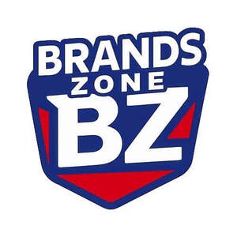

Trade Mark Journal No.2025/049 5 December 2025
UK00004298020 20 November 2025 (3,5,29,30,32)

- Class 3
- Liquid soap; Liquid soaps; Liquid bath soap; Soaps in liquid form; Dishwashing liquid; Detergent soap; Liquid dentifrice; Toilet soap; Shower soap; Body cream soap; Almond soap; Hair liquid; Body soap; Laundry soap; Washing-up liquids; Beauty soap; Shaving preparations in liquid form; Dishwasher detergents in gel form; Hand soap; Saddle soap; Dish soaps; Bath soaps.
- Class 5
- Vitamin and mineral food supplements; Liquid vitamin supplements; Vitamins and vitamin preparations; Vitamin and mineral supplements; Vitamin drinks; Health food supplements made principally of vitamins; Enzyme dietary supplements; Mineral dietary supplements for animals; Food supplements; Protein powder dietary supplements; Vitamin supplement patches; Mineral preparations and substances for medical use.
- Class 29
- Crisps; Potato crisps; Crisps (Potato -); Purple sweet potato chips; Vegetable crisps; Soft white cheese; White cheese; Hash brown potatoes; Low-fat potato crisps; Hash browns; Black pudding [blood sausage]; Pudding (Black -) [blood sausage]; White pudding; Apple chips; Black currants, processed; Processed black currants; Faggots [food]; Kale chips; Processed collard greens; Potato crisps in the form of snack foods; Strained soft white cheese; Yuca chips; Fruit chips; Chips (Fruit -); Potato chips; Chips (Potato -); Black pudding; Flavoured nuts; Chips [french fries]; Dried Chinese yams; Snack mixes consisting of dehydrated fruit and processed nuts; Strained soft white cheeses.
- Class 30
- Crisp breads; Wholewheat crisps; Crisp rolls; Crackers flavoured with vegetables; Salty biscuits; Crackers flavoured with fruit; Crackers flavoured with herbs; Crackers flavoured with meat; Crackers flavoured with spices; White tea; Biscuits flavoured with fruit; Biscuits [sweet or savoury]; White sugar; Rice crisps; Pies [sweet or savoury]; Onion biscuits; Biscuits having a chocolate flavoured coating; Savory biscuits; Savoury biscuits; Crackers flavoured with cheese; Bread with sweet red bean; Candy coated apples; Chocolate coated biscuits; Onion or cheese biscuits; Prawn crackers; Shortbread with a chocolate flavoured coating; Black tea; Mint flavoured sweets (Non-medicated -); Chocolates with mint flavoured centres; Tarts [sweet or savoury]; Bars of sweet jellied bean paste; Apple flavoured tea [other than for medicinal use]; Vegetable flavoured corn chips; Orange flavoured tea [other than for medicinal use]; Caramel coated popcorn with candied nuts; Malt biscuits; Chocolate coated fruits; Graham crackers; Bread flavoured with spices; Black treacle; Brownies; Fresh pies; Pita chips; Shortbread biscuits; Shortbread part coated with a chocolate flavoured coating; Salted biscuits; Sweet dumplings (dango); Graham cracker pie crusts; Bars of sweet jellied bean paste (Yohkan); Crisps made of cereals; Instant white tea; Biscuits; Salted wafer biscuits; Brown sauce; Hushpuppies [breads]; Crackers; Biscuits having a chocolate coating; Sweets; Candies [sweets]; Sweets [candy]; Chocolate sweets; Sugar-free sweets; Caramels [sweets]; Sugarfree sweets; Sugarless sweets; Peppermint sweets; Sweets (Peppermint -); Sweets (Non-medicated -) being acidulated caramel sweets; Gum sweets; Sweetmeats being candies; Boiled sweets; Non-medicated sweets; Sweets (Non-medicated -); Sweetmeats [candy]; Sweets (Non-medicated -) in the nature of sugar confectionery; Sweetmeats [candy] being flavoured with fruit; Xylitol-sweetened sweets; Foamed sugar sweets; Sweets (Non-medicated -) in the nature of chocolate eclairs; Sweets (Non-medicated -) in the nature of toffees; Peppermint sweets [other than for medicinal use]; Gum sweets (Non-medicated -); Mint-based sweets; Sweets (candy), candy bars and chewing gum; Chocolate candies; Chewing sweets (Non-medicated -); Chocolate desserts; Sweets (Non-medicated -) in the nature of caramels; Lollipops [confectionery]; Candies; Sweetmeats [candy] containing fruit; Chocolate pastries; Prepared desserts [confectionery]; Chocolate decorations for confectionery items; Sweets (Non-medicated -) being acidulated; Panned sweets (Non-medicated -); Sweets (Non-medicated -) in the nature of fudge; Caramels [candies]; Candy decorations for cakes; Sherbets [confectionery]; Sweets (Non-medicated -) in the nature of nougat; Chocolate-coated sugar confectionery; Chocolate confections; Sweetmeats; Chocolate candy with fillings; Chocolates; Chocolate confectionery; Sugar candy [for food]; Sugar confectionery; Flavoured sugar confectionery; Chewing sweets (Non-medicated -) having liquid fruit fillings; Cereal-based savoury snacks; Korean traditional sweets and cookies [hankwa]; Chocolate decorations for cakes; Fruit jellies [confectionery]; Jellies (Fruit -) [confectionery]; Chocolate flavoured confectionery; Mint based sweets [non-medicated]; Sugar-free mint candies; Chocolate confectionary; Fruit confectionery; Puddings for use as desserts; Caramels [candy]; Prepared desserts [pastries]; Sherbet [confectionery]; Chocolate beverages; Chocolate confectionery containing pralines; Chocolate flavoured beverages; Candy [sugar]; Sweets (Non-medicated -) containing herbal flavourings; Sweets (Non-medicated -) being alcohol based; Confectionery chocolate products; Chocolate biscuits; Candy cake decorations; Gummy candies; Candy cake; Confectionery; Chocolate-based fillings for cakes and pies; Non-medicated sugar confectionery; Fruit jelly candy; Mints [candies, non-medicated]; Savory pastries; Candy coated confections; Candy; Candy mints; Chocolate confectionery having a praline flavour; Chocolate beverages with milk; Chocolate drink preparations flavoured with toffee.
- Class 32
- Carbonated non-alcoholic drinks; Cola drinks; Fruit flavoured carbonated drinks; Carbonated soft drinks; Non-alcoholic malt drinks; Non-alcoholic soda beverages flavoured with tea; Non-alcoholic carbonated beverages; Flavoured carbonated beverages; Non-alcoholic sparkling fruit juice drinks; Non-alcoholic drinks; Non-alcoholic flavored carbonated beverages; Isotonic non-alcoholic drinks; Non-alcoholic beer flavored beverages; Non-carbonated soft drinks; Juice drinks; Non-alcoholic fruit drinks; Non-alcoholic beverages flavoured with coffee; Fruit-flavored soft drinks; Fruit-based soft drinks flavored with tea; Colas [soft drinks]; Soft drinks flavored with tea; Non-alcoholic beverages flavoured with tea; Non-alcoholic vegetable juice drinks; Fruit flavoured drinks; Non-alcoholic beverages flavored with coffee; Non-alcoholic beer; Coffee-flavored soft drinks; Fruit flavored drinks; Isotonic drinks; Non-alcoholic beverages flavored with tea; Low-calorie soft drinks; Fruit flavored soft drinks; Sarsaparilla [non-alcoholic beverage]; Carbonated water; Orange juice drinks; Non-alcoholic malt beverages; Non-alcoholic fruit vinegar beverages; Non-alcoholic beverages with tea flavor; Non-alcoholic grape juice beverages; Kvass [non-alcoholic beverage]; Fruit juice beverages (Non-alcoholic -); Non-alcoholic fruit juice beverages; Fruit-flavoured beverages; Kvass [non-alcoholic beverages]; Frozen carbonated beverages; Fruit drinks; Fruit juice drinks; Soft drinks; Cordials (non-alcoholic beverages); Guarana drinks; Coffee-flavored beer; Flavored beer; Root beers, non-alcoholic beverages; Low-alcohol beer; Smoothies [non-alcoholic fruit beverages]; Apple juice drinks; Ginger juice beverages; Fruit beverages (non-alcoholic); Non-alcoholic beverages; Beverages (Non-alcoholic -); Fruit-flavored beverages; Non-alcoholic beers; Sherbet beverages; Syrups for making fruit-flavored drinks; Bottled drinking water; Non-alcoholic fruit cocktails; Beer-based beverages; Non-alcoholic beer-based cocktails; Carbohydrate drinks; Cider, non-alcoholic; Non-alcoholic wine; Non-alcoholic honey-based beverages; Honey-based beverages (Non-alcoholic -); Frozen fruit-based drinks; Soda water; Squashes [non-alcoholic beverages]; Malt syrup for beverages; Non-alcoholic drinks enriched with vitamins and mineral salts; Iced fruit beverages; Carbonated mineral water; Cocktails, non-alcoholic; Non-alcoholic cocktails; Tonic water [non-medicated beverages]; Orange juice beverages; Drinking water with vitamins; Vegetable drinks; Slush drinks; Sherbets [beverages]; Non-alcoholic malt free beverages [other than for medical use]; Flavoured beers; Pastilles for effervescing beverages; Energy drinks; Soft drinks for energy supply; Energy drinks containing caffeine; Energy drinks [not for medical purposes].
DKS TRADERS LTD